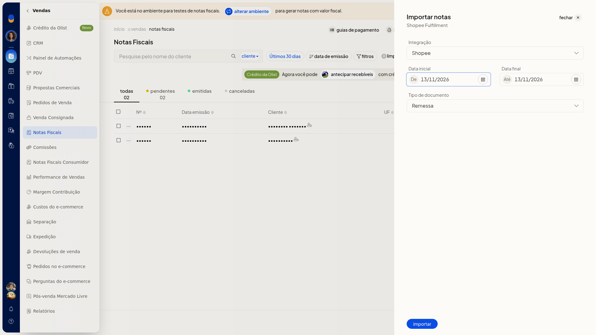

Importar notas do Shopee Fulfillment
Pré-requisitos
- A integração Shopee precisa estar conectada. O campo Integração lista somente contas já conectadas e não permite digitar uma conta nova.
Instruções
-
Acesse Vendas > Notas Fiscais.
-
Clique em Mais ações e depois em Importar notas Shopee Fulfillment.

-
Em Integração, selecione a conta Shopee já conectada. O campo não é obrigatório.
-
Confira De e Até. Os dois campos abrem com a data do dia.
-
Em Tipo de documento, selecione Remessa, Devolução, Retorno simbólico, Venda ou Remessa simbólica. O campo não é obrigatório e abre em Remessa. A importação fica definida pela conta, pelo período e pelo tipo de documento.
